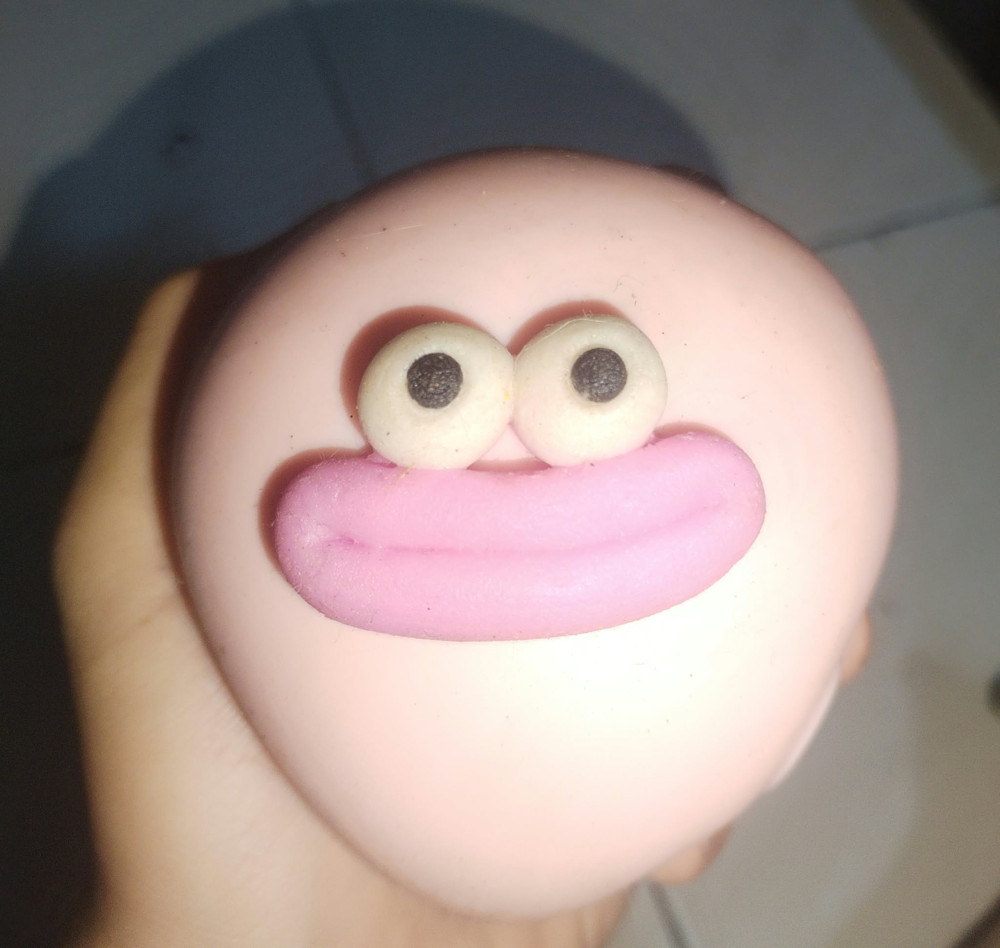

Hellooooooo, Preciousssssss!

may sasabihin sana akong walang kwentang bagay sayu, para matawa ka lang HAHAHAHAHh
ummmmmmm, ano kase naisip ko lang na parang apaka-swerte ko noh, na naisasama kita kung saan saan. From "never na ako uulit sumakay sa motor" tapos ngayon di ko na need mamilit para lang sunduin kita HAHAHAHHAHA
and i'll say it aggain, okay lang talaga sakin lahat, para sa sunod alam mo na HAHAHAHAHAHAH. hindi ka nakakaistorbo may space ka talaga sa time ko, kahit pag-hintayin mo ako oks lang sakin, hindi sakin big deal yon
as long as makita lang kita, happy na ako NAYAHAHAHAHA PAULET ULET ENO
AND... kung minsan ang tahimik ko, nahihiya lang talaga ako kasi wala ako gaanong topic na mai-sshare sayo HAHAHAHAHAHHA
peroooo all those stories na shinare mo saken, i'm genuinely happy listening to them no fake smiles, and hindi lang dahil sa stories mismo, but also because it makes me happy knowing na comfortable ka nang magkwento ng kung ano ano.
ummm, about naman sa tanong mo na "why love na ginagamit mo?"

anue kase ummmm, this isnt just infatuation or happy crush anymore.
I've thought about it, and i think i really do love you na. HAHAHAHAHAAHAHAH feel ko tatatawanan mo tong part na to but oks langchhh.
BUT SERIOUSLY, im not saying this to pressure you or to expect anything from you, i still remember everything you've told me, and i still respect your feelings and your decisions.🙃🙃🙃🙃
I just wanted to be honest about what im feeling right neowwwww...
oy pahabol lang, i really love the time we spend together, and i truly value every moment of it like PRECIOUS gold. HAHAHAHAHAHAH
to be continued.... HAHAHAHAHAH daming alam eno pwede naman send nalang sa mess.

Mukha ko everytime na makita kita HAHAHAHAHAHAHAH